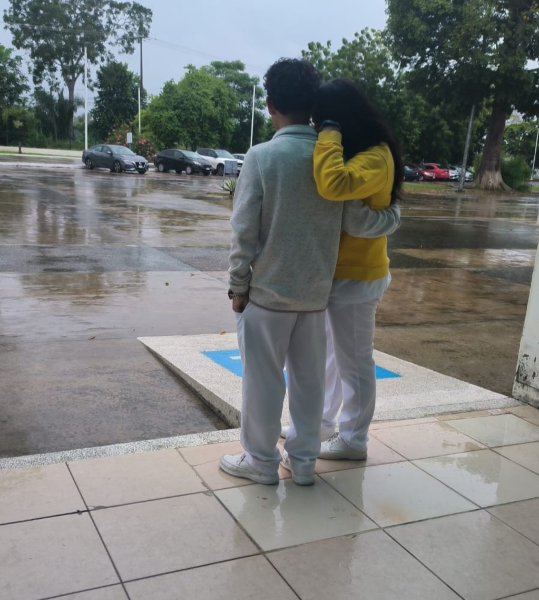
"Sin darme cuenta, cada paso me llevaba hacia ti."
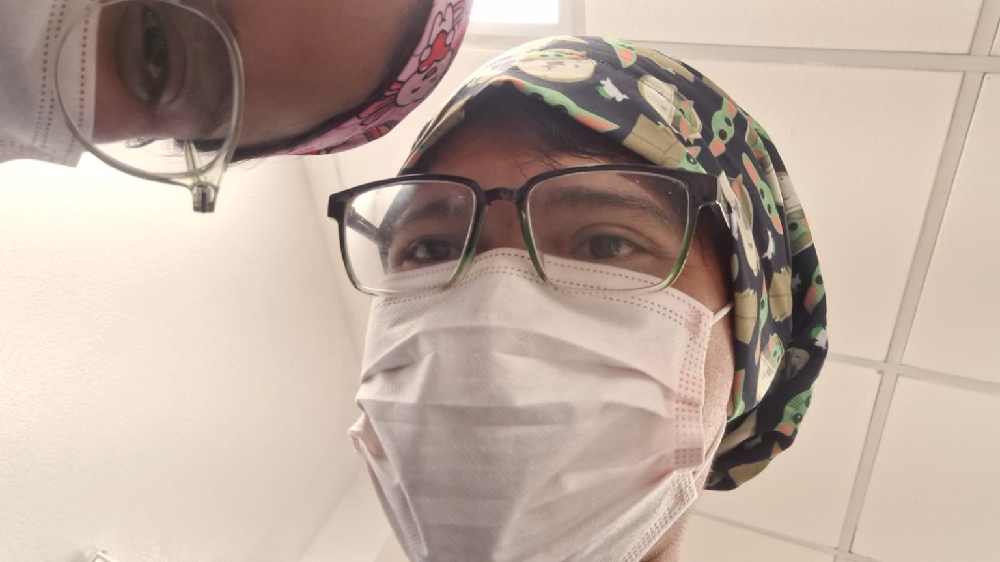
"Incluso en los días más ocupados, siempre encontré tiempo para pensar en ti."
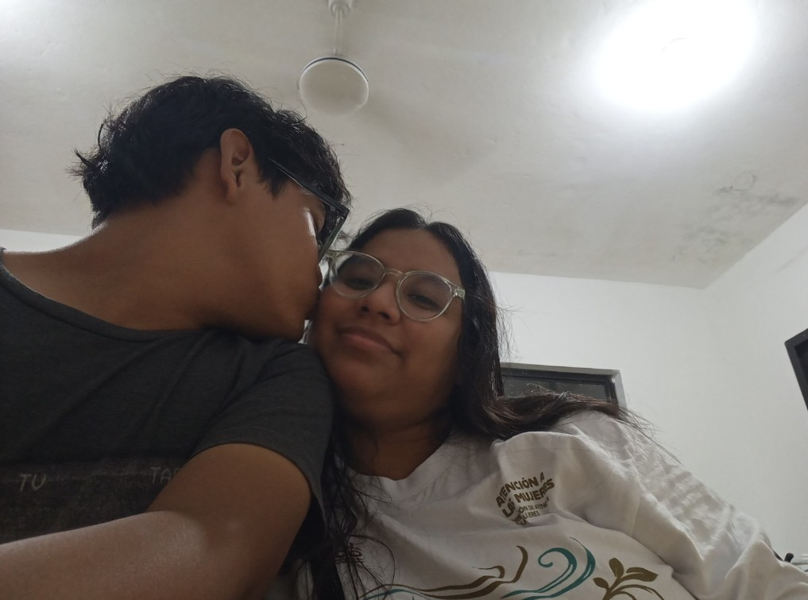
"Tus abrazos siempre han sido mi lugar favorito."
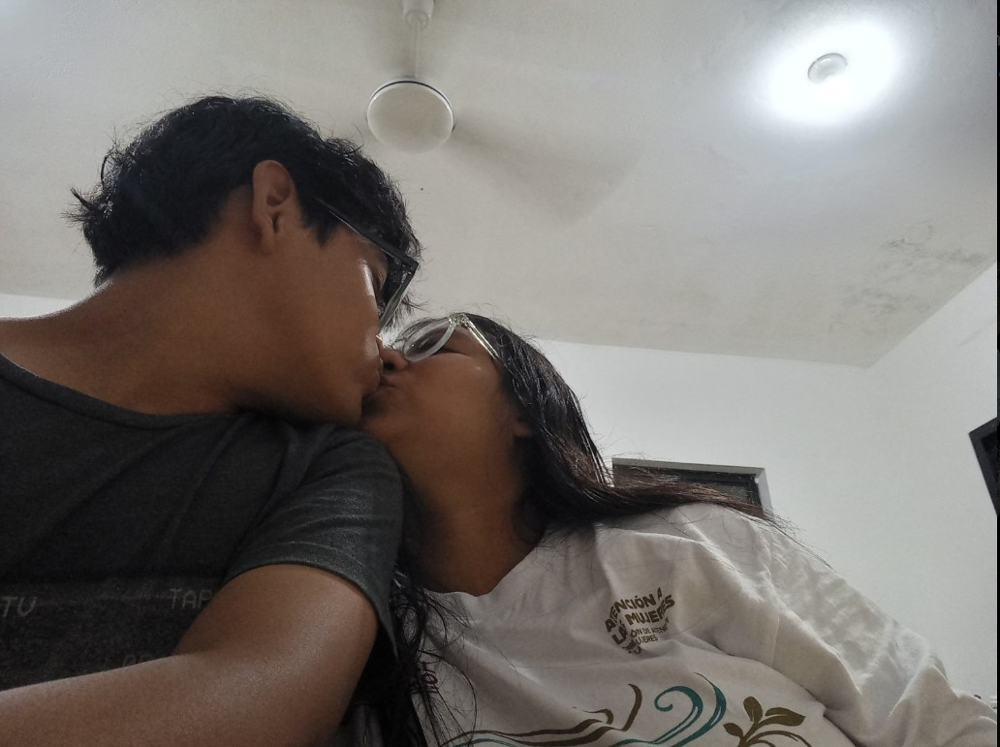
"Hay besos que duran segundos y recuerdos que duran para siempre."
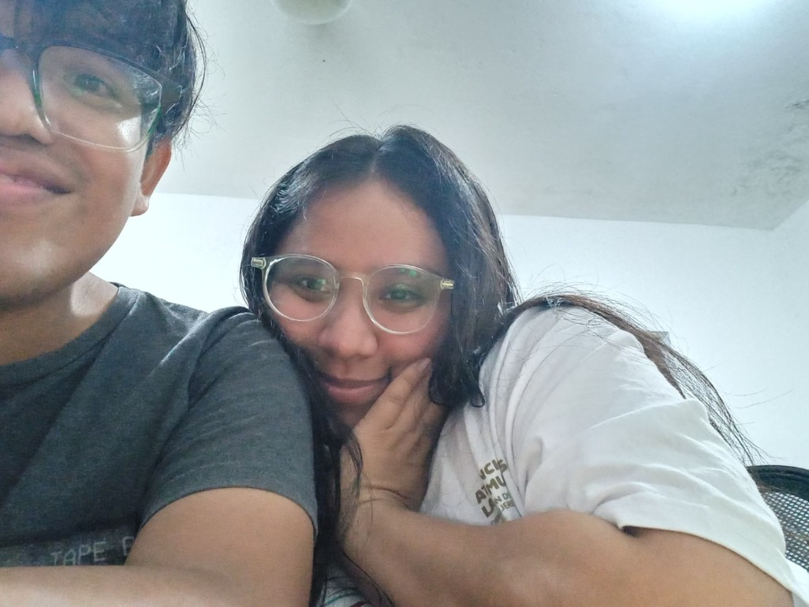
"Mi amor, sigues siendo mi lugar seguro."
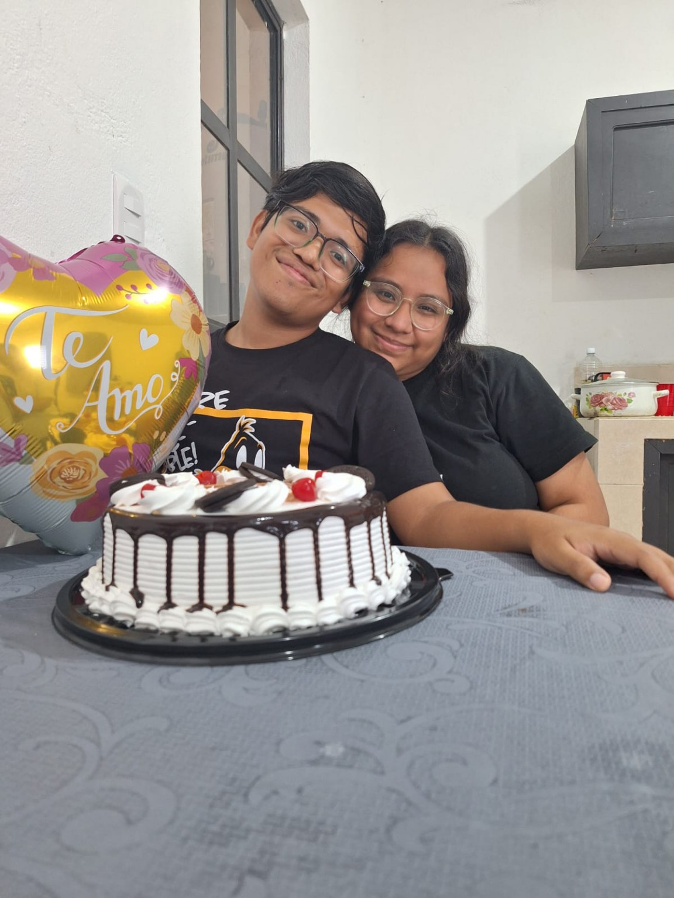
"Los momentos simples contigo son mis favoritos."
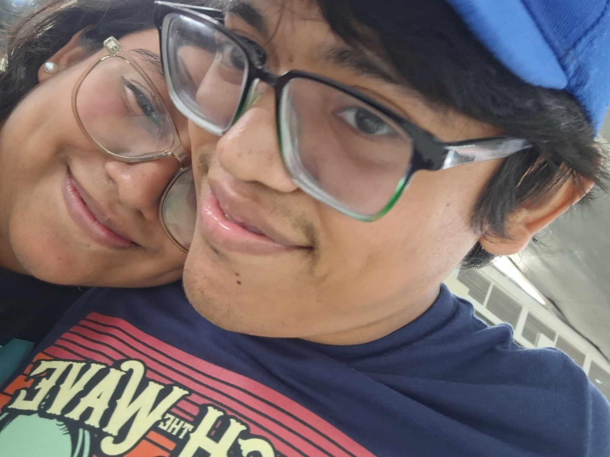
"Gracias por cada sonrisa que me regalas."
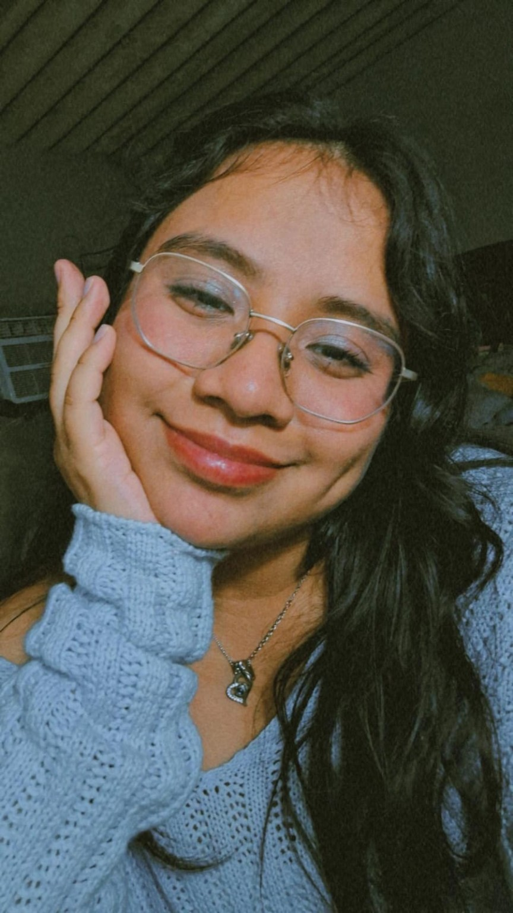
"Hay fotografías que capturan momentos. Tú capturas mi atención cada día."
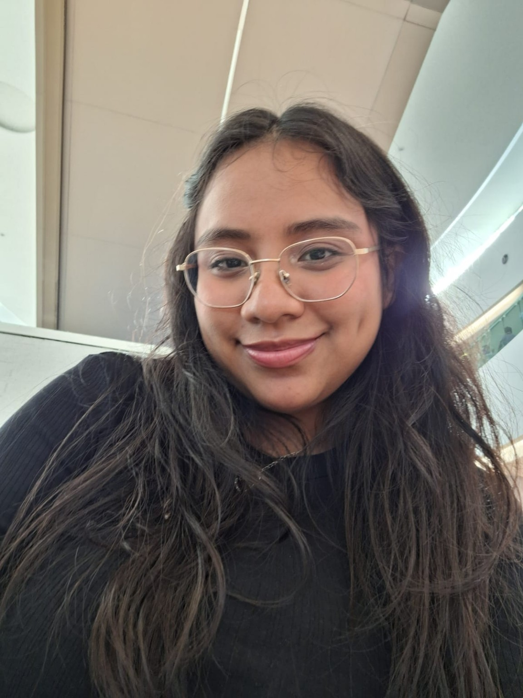
"Y cada vez que te veo, vuelvo a enamorarme un poquito más."
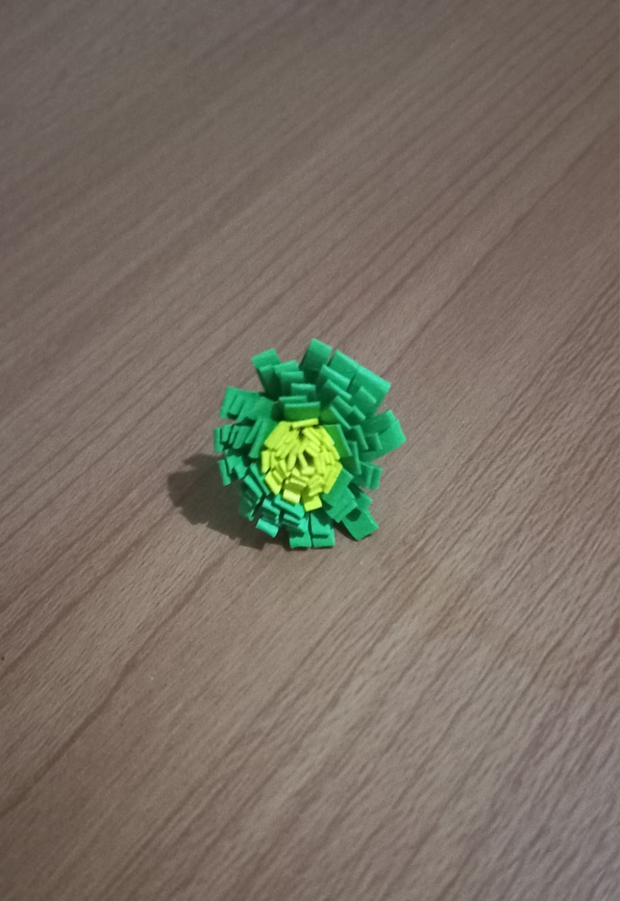
"Porque incluso los detalles más pequeños me recuerdan a ti."
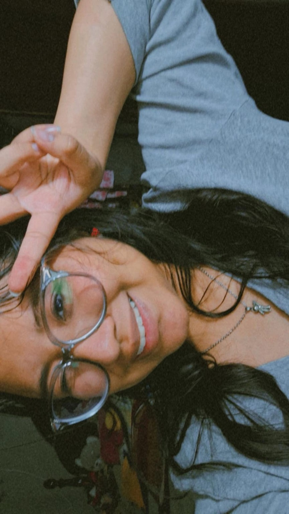
"Y de pronto ya estábamos celebrando una historia que quiero seguir escribiendo."
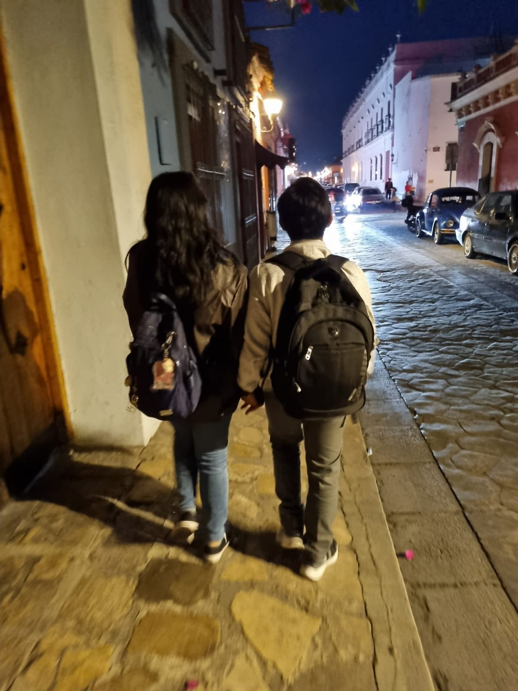
"Mi capítulo favorito siempre será aquel en el que apareces tú."
Mi amor, esta no es solo una colección de fotografías. Es una pequeña parte de nuestra historia, de los momentos que hemos compartido y de todo lo que significas para mí.
Hoy cumplimos 1 año y 8 meses juntos, y mientras pensaba en escribirte, me di cuenta de algo: soy afortunado de que nuestra historia haya comenzado incluso antes de que oficialmente estuviéramos juntos. No sé si he sido el novio que esperabas encontrar o si me he convertido en alguien diferente a lo que imaginabas. A lo largo de nuestra historia me has presentado personajes que admiras, como Nick de Heartstopper o Peter Kavinsky de *A todos los chicos de los que me enamoré*. Aunque admito que algunas de sus acciones son un poquito tóxicas, jajaja. También recuerdo a ese chico de la película del baile de graduación que aprendió hasta los detalles más pequeños de la persona que amaba para invitarla de una forma especial. Y creo que, de alguna manera, cada vez que me hablas de ellos, me haces pensar. A veces intento imitar algunas de esas acciones o aprender de ellas, porque me gustaría ser para ti alguien especial, alguien que te haga sentir enamorada y admirada, como esos personajes que tanto te gustan. Me gustaría ser tu personaje favorito, pero uno real, con errores y virtudes, que cada día intenta ser mejor para ti. También admito que tengo defectos muy marcados. Soy olvidadizo. Antes anotaba muchas cosas que te gustaban y ahora, desde que vivimos juntos, termino anotando más las cosas que no te gustan. Tal vez porque doy por hecho que conozco tus gustos y que puedo recordarlos sin esfuerzo. La verdad es que ni siquiera he logrado memorizar toda la lista que llevo escrita, pero quiero esforzarme más. Quiero seguir creciendo y convertirme en una mejor versión de mí mismo. Quiero ser mejor que aquel Cristhian de hace 1 año y 8 meses. Mejor que el chico que se enamoró de ti y que hizo todo lo posible hasta que aceptaste ser su novia. No porque aquel chico fuera malo, sino porque tú me inspiras a seguir mejorando. Hoy te escribo esta carta virtual porque este mes estamos lejos el uno del otro. Me habría gustado poder abrazarte, verte sonreír y celebrar juntos. Pero espero que los próximos meses podamos crear planes, ideas y recuerdos en persona para festejar cada momento que compartimos. También quiero que sepas que siempre me gusta escuchar tu opinión sobre las cosas que hago para ti. Sobre las cartas que te escribo, los mensajes que te envío o cualquier detalle que intento tener contigo. Me hace feliz cuando me dices qué piensas, porque sentir que lees mis palabras y compartes lo que te provocan las vuelve aún más especiales para mí. Con mucho cariño, Cristhian